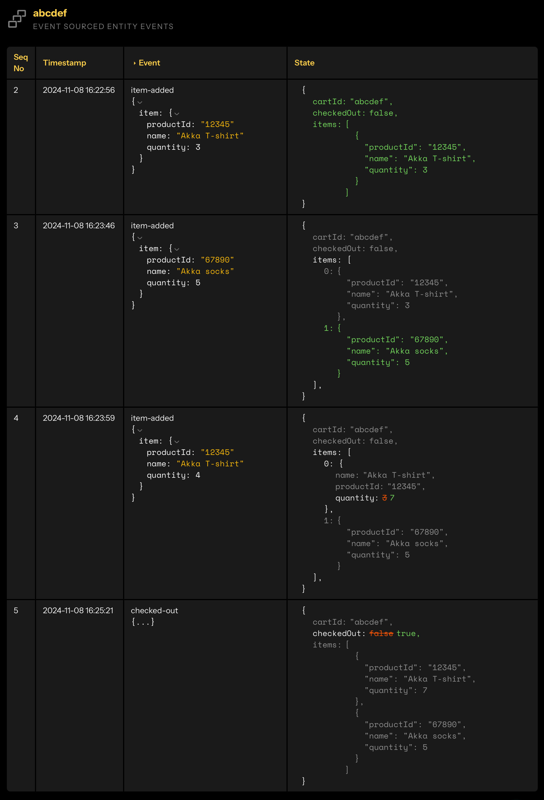

Implementing Event Sourced Entities
Event Sourced Entities are components that persist their state using the Event Sourcing Model. Instead of persisting the current state, they persist all the events that led to the current state. Akka stores these events in a journal. Event Sourced Entities persist their state with ACID semantics, scale horizontally, and isolate failures.
An Event Sourced Entity must not update its in-memory state directly as a result of a command. The handling of a command, if it results in changes being required to state, should persist events. These events will then be processed by the entity, at which point the in-memory state can and should be changed in response.
When you need to read state in your service, ask yourself what events should I be listening to? When you need to write state, ask yourself what events should I be persisting?

The image above is from the Akka console and illustrates how events for a shopping cart updates the state of the cart entity.
-
3 Akka T-shirts added.
-
5 Akka socks added.
-
4 more Akka T-shirts added, making a total of 7.
-
Cart is checked out.
To load an Entity, Akka reads the journal and replays events to compute the Entity’s current state. As an optimization, by default, Event Sourced Entities persist state snapshots periodically. This allows Akka to recreate an Entity from the most recent snapshot plus any events saved after the snapshot.
In contrast with typical create, read, update (CRUD) systems, event sourcing allows the state of the Entity to be reliably replicated to other services. Event Sourced Entities use offset tracking in the journal to record which portions of the system have replicated which events.
Event Sourced Entities persist changes as events and snapshots. Akka needs to serialize that data to send it to the underlying data store. However, we recommend that you do not persist your service’s public API messages. Persisting private API messages may introduce some overhead when converting from a public message to an internal one but it allows the logic of the service public interface to evolve independently of the data storage format, which should be private.
The steps necessary to implement an Event Sourced Entity include:
-
Model the entity’s state and its domain events.
-
Implementing behavior in command and event handlers.
The following sections walk through these steps using a shopping cart service as an example (working sample can be downloaded from GitHub).
Modeling the entity
Through our "Shopping Cart" Event Sourced Entity we expect to manage our cart, adding and removing items as we please. Being event-sourced means it will represent changes to state as a series of domain events. Have a look at what kind of model we expect to store and the events our entity might generate.
public record ShoppingCart(String cartId, List<LineItem> items, boolean checkedOut) { (1)
public record LineItem(String productId, String name, int quantity) { (2)
public LineItem withQuantity(int quantity) {
return new LineItem(productId, name, quantity);
}
}
}| 1 | Our ShoppingCart is fairly simple, being composed only by a cartId and a list of line items. |
| 2 | A LineItem represents a single product and the quantity we intend to buy. |
Above we are taking advantage of the Java record to reduce the amount of boilerplate code, but you can use regular classes so long as they can be serialized to JSON (e.g. using Jackson annotations).
|
Another fundamental aspect of our entity will be its domain events. For now, we will have 3 different events ItemAdded, ItemRemoved and CheckedOut, defined as below:
public sealed interface ShoppingCartEvent { (1)
@TypeName("item-added") (2)
record ItemAdded(ShoppingCart.LineItem item) implements ShoppingCartEvent {}
@TypeName("item-removed")
record ItemRemoved(String productId) implements ShoppingCartEvent {}
@TypeName("checked-out")
record CheckedOut() implements ShoppingCartEvent {}
}| 1 | The 3 types of event all derive from the same type ShoppingCartEvent. |
| 2 | Includes the logical type name using @TypeName annotation. |
The use of logical names for subtypes is essential for maintainability purposes. Our recommendation is to use logical names (i.e. @TypeName) that are unique per Akka service. Check type name documentation for more details.
|
Identifying the Entity
In order to interact with an Entity in Akka, we need to assign a component id and an instance id:
-
component id is a unique identifier for all entities of a given type. To define the component id, the entity class must be annotated with
@Componentand have a unique and stable identifier assigned. -
id, on the other hand, is unique per instance. The entity id is used in the component client when calling the entity from for example an Endpoint.
As an example, an entity representing a customer could have the component id customer and a customer entity for a specific customer could have the UUID instance id 8C59E488-B6A8-4E6D-92F3-760315283B6E.
The component id and entity id cannot contain the reserved character |, because that is used internally by Akka as a separator.
|
Event sourced entity’s effect API
The Event Sourced Entity’s Effect defines the operations that Akka should perform when an incoming command is handled by an Event Sourced Entity.
An Event Sourced Entity Effect can either:
-
persist events and send a reply to the caller
-
directly reply to the caller if the command is not requesting any state change
-
instruct Akka to delete the entity and send a reply to the caller
-
attach a time-to-live (TTL) to a persist effect for automatic deletion
-
return an error message
For additional details, refer to Declarative Effects.
Implementing behavior
Now that we have our Entity state defined along with its events, the remaining steps can be summarized as follows:
-
declare your entity and pick a component id (it needs to be unique as it will be used for sharding purposes);
-
implement how each command is handled and which event(s) it generates;
-
provide an event handler and how it updates the entity’s state.
The class signature for our shopping cart entity will look like this:
@Component(id = "shopping-cart") (2)
public class ShoppingCartEntity
extends EventSourcedEntity<ShoppingCart, ShoppingCartEvent> { (1)
}| 1 | Create a class that extends EventSourcedEntity<S, E>, where S is the state type this entity will store (i.e. ShoppingCart) and E is the top type for the events it persists (i.e. ShoppingCartEvent). |
| 2 | Make sure to annotate such class with @Component and pass a stable unique identifier for this entity type. |
The @Component value shopping-cart is common for all instances of this entity but must be stable - cannot be changed after a production deploy - and unique across the different entity types in the service.
|
Updating state
Having created the basis of our entity, we will now define how each command is handled. In the example below, we define a method that will add a new line item to a given shopping cart. It returns an Effect to persist an event and then sends a reply once the event is stored successfully. The state is updated by the event handler.
| The only way for a command handler to modify the Entity’s state is by persisting an event. Any modifications made directly to the state (or instance variables) from the command handler are not persisted. When the Entity is passivated and reloaded, those modifications will not be present. |
public Effect<Done> addItem(LineItem item) {
if (currentState().checkedOut()) {
logger.info("Cart id={} is already checked out.", entityId);
return effects().error("Cart is already checked out.");
}
if (item.quantity() <= 0) { (1)
logger.info("Quantity for item {} must be greater than zero.", item.productId());
return effects()
.error("Quantity for item " + item.productId() + " must be greater than zero.");
}
var event = new ShoppingCartEvent.ItemAdded(item); (2)
return effects()
.persist(event) (3)
.thenReply(newState -> Done.getInstance()); (4)
}
@Override
public ShoppingCart applyEvent(ShoppingCartEvent event) {
return switch (event) {
case ShoppingCartEvent.ItemAdded evt -> currentState().addItem(evt.item()); (5)
};
}| 1 | The validation ensures the quantity of items added is greater than zero and it fails for calls with illegal values by returning an Effect with effects().error. |
| 2 | From the current incoming LineItem we create a new ItemAdded event representing the change of the cart. |
| 3 | We store the event by returning an Effect with effects().persist. |
| 4 | The acknowledgment that the command was successfully processed is only sent if the event was successfully stored and applied, otherwise there will be an error reply. The lambda parameter newState gives us access to the new state returned by applying such event. |
| 5 | Event handler returns the updated state after applying the event - the logic for updating the state is defined inside the ShoppingCart domain model. |
As mentioned above, the business logic for updating the state was placed on the domain model as seen below:
public ShoppingCart addItem(LineItem item) {
var lineItem = updateItem(item); (1)
List<LineItem> lineItems = removeItemByProductId(item.productId()); (2)
lineItems.add(lineItem); (3)
lineItems.sort(Comparator.comparing(LineItem::productId));
return new ShoppingCart(cartId, lineItems, checkedOut); (4)
}
private LineItem updateItem(LineItem item) {
return findItemByProductId(item.productId())
.map(li -> li.withQuantity(li.quantity() + item.quantity()))
.orElse(item);
}
private List<LineItem> removeItemByProductId(String productId) {
return items()
.stream()
.filter(lineItem -> !lineItem.productId().equals(productId))
.collect(Collectors.toList());
}
public Optional<LineItem> findItemByProductId(String productId) {
Predicate<LineItem> lineItemExists = lineItem -> lineItem.productId().equals(productId);
return items.stream().filter(lineItemExists).findFirst();
}| 1 | For an existing item, we will make sure to sum the existing quantity with the incoming one. |
| 2 | Returns an updated list of items without the existing item. |
| 3 | Adds the updated item to the shopping cart. |
| 4 | Returns a new instance of the shopping cart with the updated line items. |
Retrieving state
To have access to the current state of the entity we can use currentState() as you have probably noticed from the examples above. However, what if this is the first command we are receiving for this entity? The following example shows the implementation of the read-only command handler getCart:
private final String entityId;
private static final Logger logger = LoggerFactory.getLogger(ShoppingCartEntity.class);
public ShoppingCartEntity(EventSourcedEntityContext context) {
this.entityId = context.entityId(); (1)
}
@Override
public ShoppingCart emptyState() { (2)
return new ShoppingCart(entityId, Collections.emptyList(), false);
}
public ReadOnlyEffect<ShoppingCart> getCart() {
return effects().reply(currentState()); (3)
}| 1 | Stores the entityId on an internal attribute so we can use it later. |
| 2 | Provides initial state - we recommend always overriding emptyState() to return a sensible default. If not overridden, currentState() will return null until the first event is persisted, which requires null checks in all command and event handlers. |
| 3 | Returns the current state as reply for the request. |
| We are returning the internal state directly back to the requester. In the endpoint, it is usually best to convert this internal domain model into a public model so the internal representation is free to evolve without breaking clients code. |
Deleting an entity
Normally, Event Sourced Entities are not deleted because the history of the events typically provide business value. For certain use cases or for regulatory reasons the entity can be deleted.
public Effect<Done> checkout() {
if (currentState().checkedOut()) return effects().reply(Done.getInstance());
return effects()
.persist(new ShoppingCartEvent.CheckedOut()) (1)
.deleteEntity() (2)
.thenReply(newState -> Done.getInstance());
}| 1 | Persist final event before deletion, which is handled as any other event. |
| 2 | Instruction to delete the entity. |
When you give the instruction to delete the entity it will still exist for some time, including its events and snapshots. The actual removal of events and snapshots will be deleted later to give downstream consumers time to process all prior events, including the final event that was persisted together with the deleteEntity effect. By default, the existence of the entity is completely cleaned up after a week.
It is not allowed to persist more events after the entity has been "marked" as deleted. You can still handle read requests to the entity until it has been completely removed. To check whether the entity has been deleted, you can use the isDeleted method inherited from the EventSourcedEntity class.
It is best to not reuse the same entity id after deletion, but if that happens after the entity has been completely removed it will be instantiated as a completely new entity without any knowledge of previous state.
Note that deleting View state must be handled explicitly.
Automatic expiry
As an alternative to explicit deletion, you can set a time-to-live (TTL) on a persist effect using expireAfter. The entity will be automatically deleted once the given duration has elapsed without any further events being persisted.
Unresolved include directive in modules/sdk/pages/event-sourced-entities.adoc - include::example$doc-snippets/src/main/java/com/example/ttl/ShoppingCartEntity.java[]| 1 | The entity will be deleted 30 days after this persist if no further events are persisted. |
A subsequent persist without expireAfter will cancel the TTL. To keep the entity expiring after further updates, each persist must include expireAfter.
Snapshots
Snapshots are an important optimization for Event Sourced Entities that persist many events. Rather than reading the entire journal upon loading or restart, Akka can initiate them from a snapshot.
Snapshots are stored and handled automatically by Akka without any specific code required. Snapshots are stored after a configured number of events:
akka.javasdk.event-sourced-entity.snapshot-every = 100When the Event Sourced Entity is loaded again, the snapshot will be loaded before any other events are received.
Multi-region replication
Stateful components like Event Sourced Entities, Key Value Entities or Workflow can be replicated to other regions. This is useful for several reasons:
-
resilience to tolerate failures in one location and still be operational, even multi-cloud redundancy
-
possibility to serve requests from a location near the user to provide better responsiveness
-
load balancing to be able to handle high throughput
For each stateful component instance there is a primary region, which handles all write requests. Read requests can be served from any region.
Read requests are defined by declaring the command handler method with ReadOnlyEffect as return type. A read-only handler cannot update the state, and that is enforced at compile time.
public ReadOnlyEffect<ShoppingCart> getCart() {
return effects().reply(currentState()); (3)
}Write requests are defined by declaring the command handler method with Effect as return type, instead of ReadOnlyEffect. Write requests are routed to the primary region and handled by the stateful component instance in that region even if the original call to the instance with the component client was made from another region.
State changes (Workflow, Key Value Entity) or events (Event Sourced Entity) persisted by the instance in the primary region are replicated to other regions and processed by corresponding instance there. This means that the state of the stateful components in all regions are updated from the primary.
The replication is asynchronous, which means that read replicas are eventually updated. Normally within a few milliseconds, but if there is for example a problem with the network between the regions it can take longer time for the read replicas to become up to date, but eventually they will.
This also means that you might not see your own writes, immediately. Consider the following:
-
send a write request and that is routed to a primary in another region
-
after receiving the response of the write request, you send a read request that is served by the non-primary region
-
the stateful component instance in the non-primary region might not have seen the replicated changes yet, and therefore replies with "stale" information
If it is important for some read requests to have seen latest writes you can use Effect for such command handler, even though it is not persisting any events. Then the request will be routed to the primary and use the latest fully consistent state.
The operational aspects are described in Regions.
Replication filters
Events are by default replicated to all regions that have been enabled for the service. For regulatory reasons or as cost optimization it is possible to filter which regions that participate in the replication for a specific entity. This can be changed at runtime by the entity itself.
import akka.Done;
import akka.javasdk.annotations.Component;
import akka.javasdk.annotations.EnableReplicationFilter;
import akka.javasdk.eventsourcedentity.EventSourcedEntity;
import akka.javasdk.eventsourcedentity.ReplicationFilter;
@Component(id = "shopping-cart")
@EnableReplicationFilter (1)
public class ShoppingCartEntity extends EventSourcedEntity<ShoppingCart, ShoppingCartEvent> {
public Effect<Done> replicateTo(String region) {
return effects()
.updateReplicationFilter(ReplicationFilter.includeRegion(region)) (2)
.thenReply(__ -> Done.getInstance());
}
}| 1 | Enable the replication filter feature by adding the @EnableReplicationFilter annotation. |
| 2 | Define the replication filter with the updateReplicationFilter effect. |
After enabling the replication filter the entity is still replicated to all regions until specific regions are defined with the updateReplicationFilter effect. This effect can be combined with persisting events and thereby also updating the state of the entity. It can also be used without persisting additional events, e.g. if it is an explicit command to change the filter, but it is not changing the state of the entity.
The filter can only be updated from the entity’s primary region. With the request-region primary selection strategy, updating the filter from a non-primary region will cause that region to become the new primary. The filter is durable for the specific entity instance and can be changed without deploying a new version.
In the ReplicationFilter you define the regions to be included or excluded in the replication. The region where the update is made, the so-called self region, is automatically included in the replication filter and cannot be excluded. The changes are additive for each entity instance, meaning that if you first updateReplicationFilter and include gcp-us-east1 and then later make another updateReplicationFilter and include aws-us-east-2 from the same entity, then both gcp-us-east1 and aws-us-east-2 are included.
When you add the @EnableReplicationFilter annotation the entity will still replicate to all regions until you have defined a filter with updateReplicationFilter. You can define the filter when persisting events, including the first event. For example, this is how to effectively disable replication to other regions for a specific entity by defining a filter that only includes the self region:
public Effect<Done> createCart(String userId) {
var selfRegion = commandContext().selfRegion();
return effects()
.persist(new CartCreated(commandContext().entityId(), userId))
.updateReplicationFilter(ReplicationFilter.includeRegion(selfRegion))
.thenReply(__ -> Done.getInstance());
}If you start with an entity with such self region filter in gcp-us-east1, and then later receive a command (not read-only) for this entity instance in another aws-us-east-2, it will automatically synchronize all events in from gcp-us-east1 before handling the command in gcp-us-east1. Such command will also automatically include aws-us-east-2 to the replication filter and events will be replicated to both gcp-us-east1 and aws-us-east-2. You can remove a region from the replication with ReplicationFilter.excludeRegion.
| If you first have a region included in the filter and then exclude it in the filter, the entity instance will still exist in the excluded region, but without receiving any new events. In other words, the state will remain as the old state if you access it with read-only commands in the excluded region. |
Notification
When an Event Sourced Entity processes commands, clients often need to track changes in real-time. Rather than repeatedly polling the entity state, you can use the NotificationPublisher to push updates to subscribers. This is more efficient and provides a better user experience, especially for entities with frequent state changes.
The notification mechanism works as follows:
-
The entity injects a
NotificationPublisher<T>whereTis the notification message type -
During command handling, the entity calls
publish(message)to send notifications -
The entity exposes a method returning
NotificationStream<T>for clients to subscribe -
Clients use the
ComponentClientto subscribe and receive notifications as a stream
Publishing notifications
To add notifications to an Event Sourced Entity, inject the NotificationPublisher in the constructor and call publish() at appropriate points during command handling.
@Component(id = "shopping-cart-with-notifications")
public class ShoppingCartEntityWithNotifications
extends EventSourcedEntity<
ShoppingCartEntityWithNotifications.Cart,
ShoppingCartEntityWithNotifications.CartEvent
> {
public record Cart(String cartId, List<String> items) {}
public sealed interface CartEvent {
@TypeName("item-added")
record ItemAdded(String productId) implements CartEvent {}
}
private final String entityId;
private final NotificationPublisher<CartEvent> notificationPublisher;
public ShoppingCartEntityWithNotifications(
EventSourcedEntityContext context,
NotificationPublisher<CartEvent> notificationPublisher (1)
) {
this.entityId = context.entityId();
this.notificationPublisher = notificationPublisher;
}
@Override
public Cart emptyState() {
return new Cart(entityId, List.of());
}
public Effect<Done> addItem(String productId) {
var event = new CartEvent.ItemAdded(productId);
return effects()
.persist(event)
.thenReply(__ -> {
notificationPublisher.publish(event); (2)
return Done.done();
});
}
public NotificationStream<CartEvent> updates() { (3)
return notificationPublisher.stream();
}
}| 1 | Inject NotificationPublisher typed with your notification message type. A common pattern for Event Sourced Entities is to publish the events themselves, as shown here. You can also publish other message types such as a simple String, a dedicated notification record, or a sealed interface for multiple message types. |
| 2 | Publish the event inside thenReply, after the event has been successfully persisted. This prevents sending notifications if the persist fails. |
| 3 | Expose the notification stream via a public method. Clients will reference this method when subscribing. |
Subscribing to notifications
Clients subscribe to entity notifications using the ComponentClient. The notifications are delivered as a reactive stream, which can be exposed to external clients as Server-Sent Events (SSE). Map domain events to API records before exposing them to avoid leaking internal domain types.
@HttpEndpoint("/cart")
@Acl(allow = @Acl.Matcher(principal = Acl.Principal.ALL))
public class ShoppingCartEndpoint {
public record CartUpdate(String type, String productId) {} (1)
@Get("/updates/{cartId}")
public HttpResponse updates(String cartId) {
var source = componentClient
.forEventSourcedEntity(cartId)
.notificationStream(ShoppingCartEntityWithNotifications::updates)
.source()
.map(event -> toApi(event)); (2)
return HttpResponses.serverSentEvents(source);
}
private CartUpdate toApi(CartEvent event) {
return switch (event) {
case CartEvent.ItemAdded added -> new CartUpdate("item-added", added.productId());
};
}
}| 1 | Define API-specific records to avoid exposing internal domain events outside the service. |
| 2 | Map domain events to API records using the map operator on the notification source. |
| The notification stream is a live stream that emits messages only after the client creates the stream—it does not replay historical messages. While the stream is running, it delivers all messages in order without message loss. If the stream detects missing messages, it will fail, allowing clients to reconnect and recover. |
| Notifications should not be used for building business logic. Akka does not guarantee delivery of every notification. Messages may be lost due to network issues, client disconnections, or other transient failures. If your application requires reliable state synchronization, implement a reconciliation mechanism that fetches the authoritative entity state when needed. |
Side effects
An entity does not perform any external side effects aside from persisting events, replying to the request, and publishing notifications. Other side effects, such as calling external services or other components, should be handled from the Workflow, Consumer, or Endpoint components that are calling the entity.
Testing the entity
There are two ways to test an Entity:
-
Unit test, which only runs the Entity component with a test kit.
-
Integration test, running the entire service with a test kit and the test interacting with it using a component client or over HTTP requests.
Each way has its benefits, unit tests are faster and provide more immediate feedback about success or failure but can only test a single entity at a time and in isolation. Integration tests, on the other hand, are more realistic and allow many entities to interact with other components inside and outside the service.
Unit tests
The following snippet shows how the EventSourcedTestKit is used to test the ShoppingCartEntity implementation. Akka provides two main APIs for unit tests, the EventSourcedTestKit and the EventSourcedResult. The former gives us the overall state of the entity and all the events produced by all the calls to the Entity. While the latter only holds the effects produced for each individual call to the Entity.
package shoppingcart.application;
import static org.junit.jupiter.api.Assertions.assertEquals;
import akka.Done;
import akka.javasdk.testkit.EventSourcedTestKit;
import java.util.List;
import org.junit.jupiter.api.Test;
import shoppingcart.domain.ShoppingCart;
import shoppingcart.domain.ShoppingCartEvent.ItemAdded;
public class ShoppingCartTest {
// prettier-ignore
private final ShoppingCart.LineItem akkaTshirt =
new ShoppingCart.LineItem("akka-tshirt", "Akka Tshirt", 10);
@Test
public void testAddLineItem() {
var testKit = EventSourcedTestKit.of(ShoppingCartEntity::new); (1)
{
var result = testKit.method(ShoppingCartEntity::addItem).invoke(akkaTshirt); (2)
assertEquals(Done.getInstance(), result.getReply()); (3)
var itemAdded = result.getNextEventOfType(ItemAdded.class);
assertEquals(10, itemAdded.item().quantity()); (4)
}
// actually we want more akka tshirts
{
var result = testKit
.method(ShoppingCartEntity::addItem)
.invoke(akkaTshirt.withQuantity(5)); (5)
assertEquals(Done.getInstance(), result.getReply());
var itemAdded = result.getNextEventOfType(ItemAdded.class);
assertEquals(5, itemAdded.item().quantity());
}
{
assertEquals(testKit.getAllEvents().size(), 2); (6)
var result = testKit.method(ShoppingCartEntity::getCart).invoke(); (7)
assertEquals(
new ShoppingCart("testkit-entity-id", List.of(akkaTshirt.withQuantity(15)), false),
result.getReply()
);
}
}
}| 1 | Creates the TestKit passing the constructor of the Entity. |
| 2 | Calls the method addItem from the Entity in the EventSourcedTestKit with quantity 10. |
| 3 | Asserts the return value is Done. |
| 4 | Returns the next event of type ItemAdded and asserts on the quantity. |
| 5 | Add a new item with quantity 5. |
| 6 | Asserts that the total number of events should be 2. |
| 7 | Calls the getCart method and asserts that quantity should be 15. |
The EventSourcedTestKit is stateful, and it holds the state of a single entity instance in memory. If you want to test more than one entity in a test, you need to create multiple instances of EventSourcedTestKit.
|
EventSourcedResult
Calling a command handler through the TestKit gives us back an EventSourcedResult. This class has methods that we can use to assert the handling of the command, such as:
-
getReply()- the response from the command handler if there was one, if not an, exception is thrown, failing the test. -
getAllEvents()- all the events persisted by handling the command. -
getState()- the state of the entity after applying any events the command handler persisted. -
getNextEventOfType(ExpectedEvent.class)- check the next of the persisted events against an event type, return it for inspection if it matches, or fail the test if it does not. The event gets consumed once is inspected and the next call will look for a subsequent event.
EventSourcedTestKit
For the above example, this class provides access to all the command handlers of the ShoppingCart entity for unit testing. In addition to that also has the following methods:
-
getState()- the current state of the entity, it is updated on each method call persisting events. -
getAllEvents()- all events persisted since the creation of the testkit instance.
Integration tests
The skeleton of an Integration Test is included in the getting started sample. The following shows what it could look like to test our ShoppingCartEntity:
public class ShoppingCartIntegrationTest extends TestKitSupport { (1)
@Test
public void createAndManageCart() {
String cartId = "card-abc";
var item1 = new LineItem("tv", "Super TV 55'", 1);
var response1 = componentClient (2)
.forEventSourcedEntity(cartId) (3)
.method(ShoppingCartEntity::addItem) (4)
.invoke(item1);
Assertions.assertNotNull(response1);
// confirming only one product remains
ShoppingCart cartUpdated = componentClient
.forEventSourcedEntity(cartId)
.method(ShoppingCartEntity::getCart) (5)
.invoke();
Assertions.assertEquals(1, cartUpdated.items().size()); (6)
Assertions.assertEquals(item2, cartUpdated.items().get(0));
}
}| 1 | Note the test class must extend TestKitSupport. |
| 2 | A built-in component client is provided to interact with the components. |
| 3 | Identify the entity instance by its id cart-abc. |
| 4 | Call the addItem command handler on the entity. |
| 5 | Retrieve the current shopping cart state. |
| 6 | Assert there should only be one item remaining after removal. |
The integration tests in samples can be run using mvn verify.
|